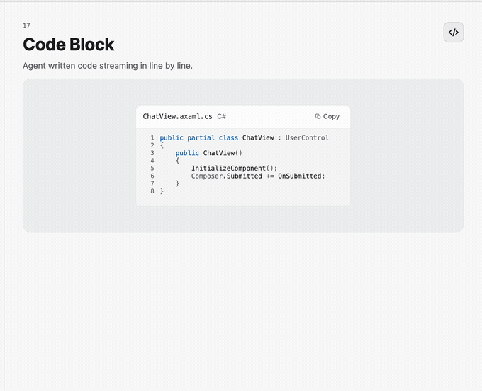
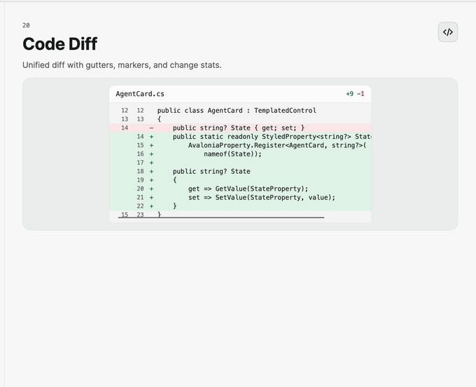
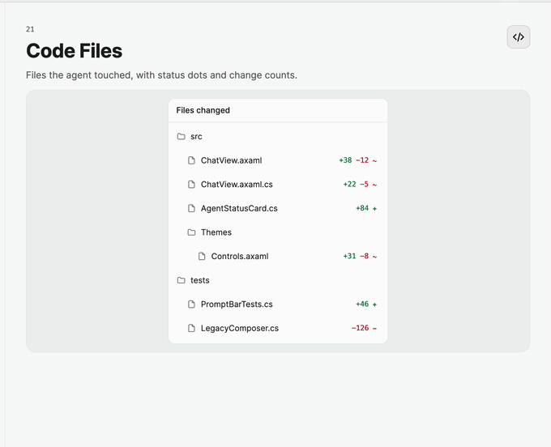

Code Review Controls
Use CodeBlock for tokenized source, CodeDiffView for unified changes, and CodeFileTree for a navigable summary of affected files.
Show source code
<nova:CodeBlock FileName="AgentService.cs"
Language="csharp"
ItemsSource="{Binding CodeLines}"
CopiedCommand="{Binding CodeCopiedCommand}" />
CodeBlock accepts CodeLine items containing CodeToken values. This keeps tokenization provider-agnostic and lets the host stream line-by-line results. Copy success and failure are available as events and commands.

Display a diff
<nova:CodeDiffView FileName="AgentService.cs"
ItemsSource="{Binding DiffLines}"
LinesMaxHeight="420" />
Supply DiffLine items and classify them with DiffLineKind. The control renders gutters, line numbers, add/delete markers, and aggregate change labels.

Navigate changed files
<nova:CodeFileTree Header="Files changed"
ItemsSource="{Binding Files}"
FileSelectedCommand="{Binding OpenFileCommand}" />
CodeFileItem captures the path, status, and change counts. Handle FileSelected or bind FileSelectedCommand to synchronize the tree with a code or diff view.
